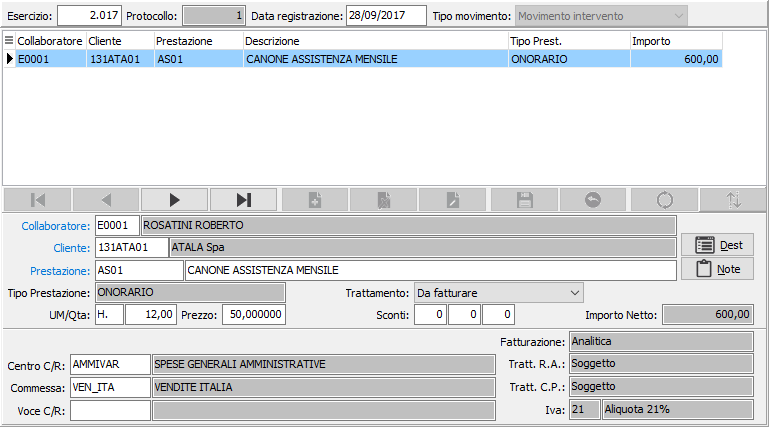
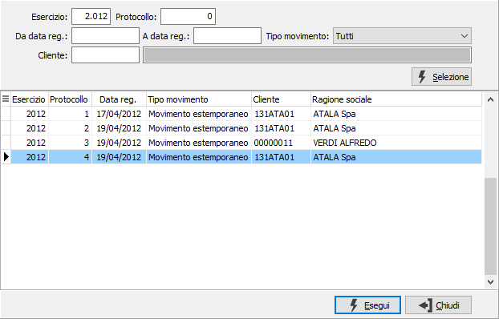

Movimenti prestazioni
Il programma consente l’inserimento, quotidiano o periodico, delle prestazioni estemporanee effettuate per i vari clienti, con possibilità di definire se la prestazione deve essere parcellata oppure se viene inserita al solo scopo di rendiconto delle attività svolte. E possibile inoltre, se previsto in configurazione parcellazione, indicare anche il collaboratore della Ditta che ha curato la prestazione. Le prestazioni inserite sono qualificate come “Movimenti estemporanei”. Il programma consente inoltre di modificare o cancellare i “Movimenti ricorrenti”, ovvero i movimenti generati automaticamente dall’apposita procedura.
La maschera video illustrata visualizza il pannello di input, che prevede i campi codice collaboratore, codice progetto, codice centro di costo analitica, codice commessa analitica, codice voce di costo analitica. Naturalmente tali campi sono visualizzati solo se le varie configurazioni lo prevedono.

La sezione superiore contiene i dati generali della registrazione:
ESERCIZIO: esercizio del movimento, in fase di inserimento propone l’ esercizio corrente. Sul campo è attiva la funzione di ricerca dei movimenti (F9) che visualizza la finestra sottostante dove sono disponibili vari criteri per effettuare la ricerca sui movimenti presenti.

PROTOCOLLO: campo numerico che contiene il numero progressivo del movimento manodopera. Viene proposto in base alla tabella protocolli e non è modificabile dall’utente.
DATA REGISTRAZIONE: data del movimento, in fase di inserimento propone la data del giorno.
TIPO INSERIMENTO: visualizza il tipo di movimento: movimento intervento o da prestazione ricorrente.
La sezione sottostante contiene il dettaglio dei documenti registrati:
COLLABORATORE: campo alfanumerico per indicare il codice dell'eventuale collaboratore che ha effettuato la prestazione. In caricamento, dal secondo rigo in avanti, viene automaticamente proposto, con possibilità di variazione, il codice collaboratore del rigo precedente. Sul campo sono attive le funzioni di ricerca (F9) ed accesso rapido (CTRL+W) sulla tabella stessa.
CLIENTE: codice del cliente, presente in anagrafica, per indicare il cliente che ha usufruito della prestazione. Non è consentito lasciare il campo vuoto. In caricamento, dal secondo rigo in avanti, viene automaticamente proposto, con possibilità di variazione, il codice collaboratore del rigo precedente. Sul campo sono attive le funzioni di ricerca (F9) ed accesso rapido (CTRL+W) sulla tabella stessa.
PRESTAZIONE: codice alfanumerico presente in anagrafica prestazioni per indicare la prestazione da addebitare. A conferma, vengono visualizzati la descrizione (modificabile), il tipo prestazione, il tipo fatturazione, l’assoggettamento a ritenuta d’acconto, l’assoggettamento a cassa previdenza, l’aliquota Iva o esenzione, nonché il prezzo unitario della prestazione desunto dalle tariffe speciali per cliente, dal listino oppure dall’anagrafica prestazione. Se previsto dalle configurazioni, vengono visualizzati anche i codici Centro C/R, Commessa e Voce C/R tutti modificabili. Sul campo sono attive le funzioni di ricerca (F9) ed accesso rapido (CTRL+W) sulla tabella stessa.
NOTE: bottone che abilita un ulteriore specifica di annotazioni per il rigo corrente.
TRATTAMENTO: indica se l'intervento de essere parcellato (da parcellare) oppure viene inserito solo ai fini di promemoria (statistico).
Quantità: campo numerico obbligatorio per inserire la quantità di prestazione.
PREZZO: campo numerico per inserire il prezzo. Per le prestazioni codificate viene presentato, nell’ordine, il prezzo presente nell'eventuale listino speciale, oppure il prezzo del listino memorizzato sul documento, oppure il prezzo di vendita presente in anagrafica prestazione. Il prezzo proposto può essere modificato dall’utente. Sul campo agisce la funzione F11 che abilita la vista sugli ultimi prezzi praticati al cliente attivo relativamente alla prestazione indicata, per consentirne l’eventuale acquisizione. La vista non viene abilitata se non esistono prezzi relativi all’articolo in esame.
Se attivo il modulo di contabilità analitica, saranno presenti anche il centro di ricavo, la voce di ricavo e la commessa, in base a quanto indicato in configurazione contabilità analitica.